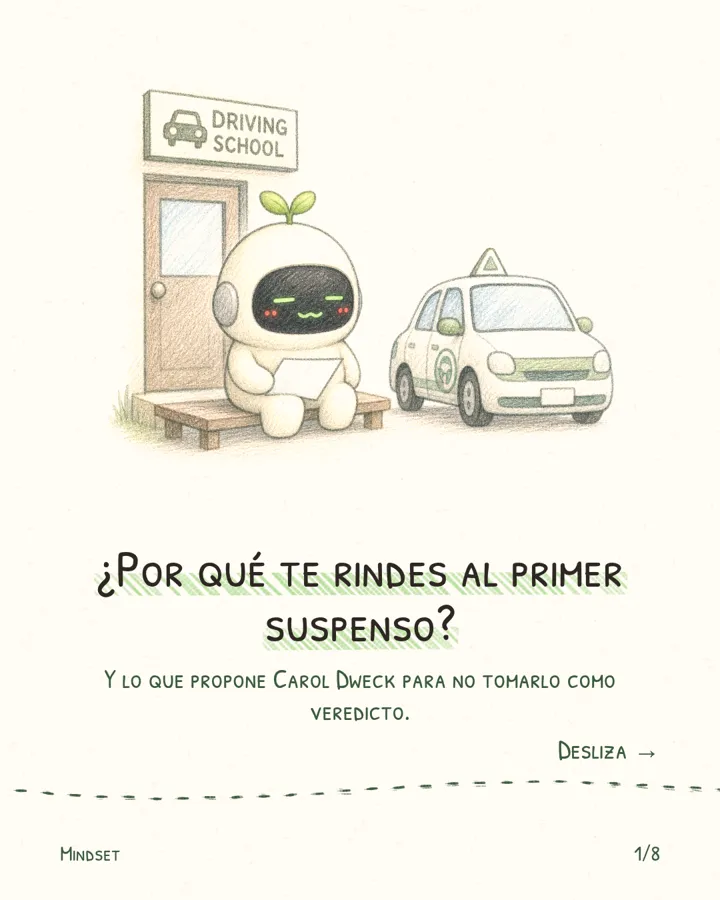
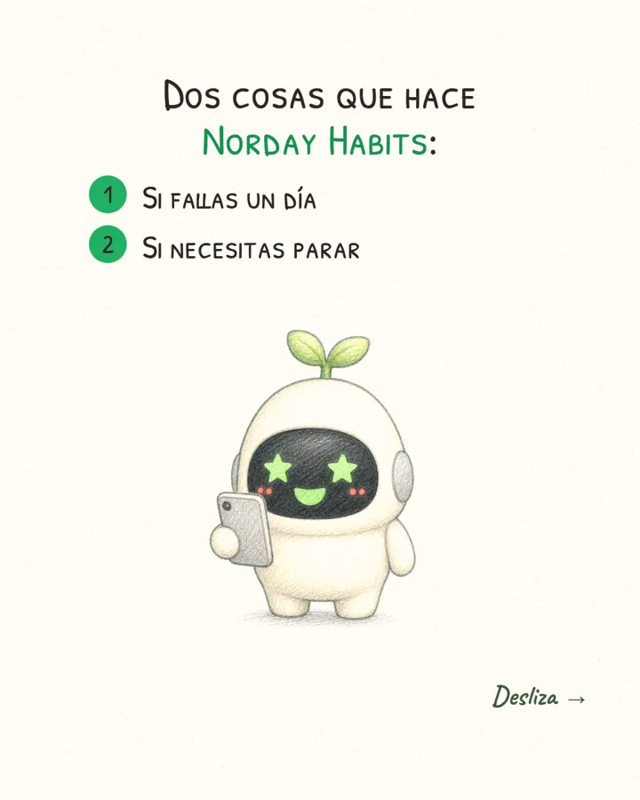
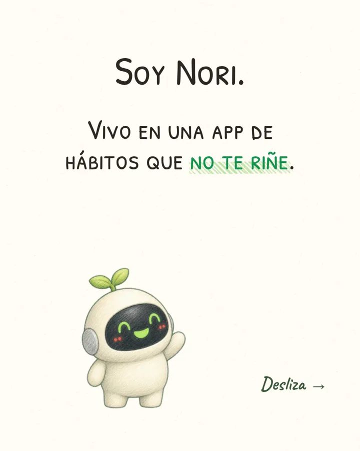
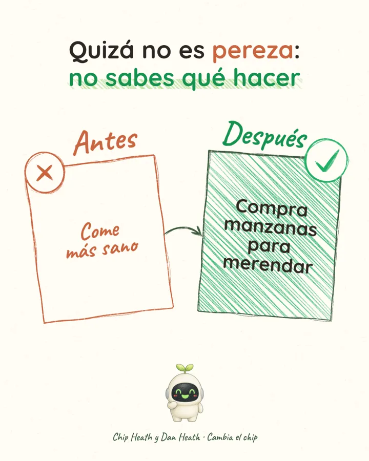
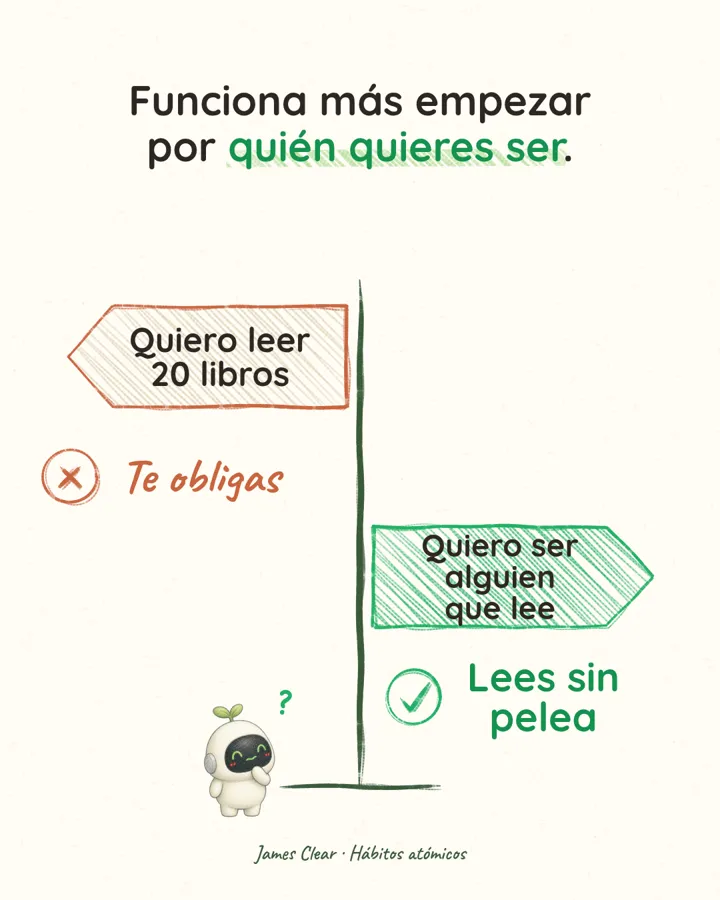
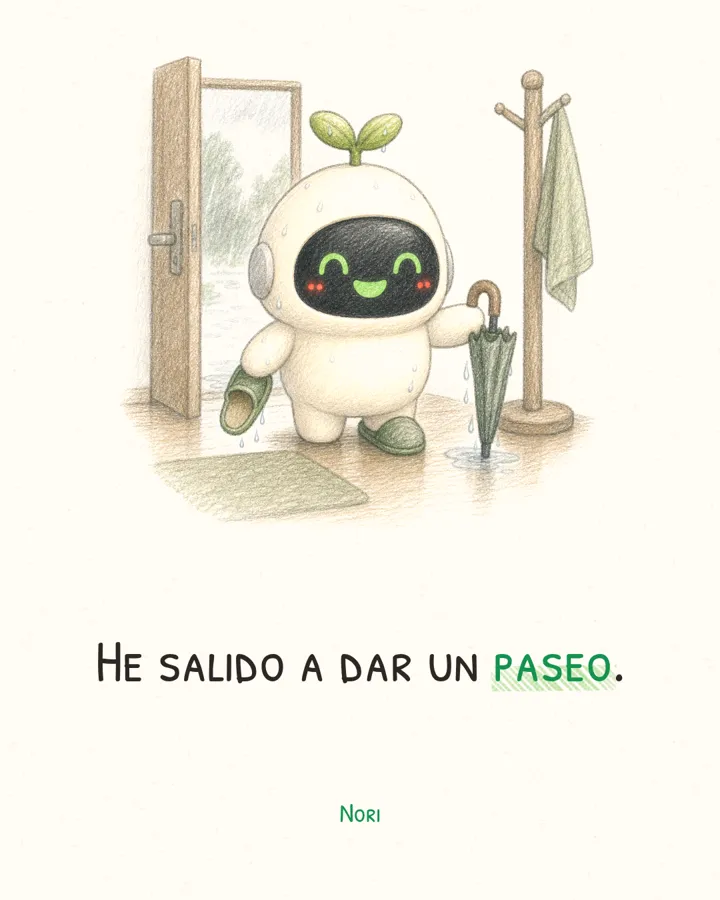
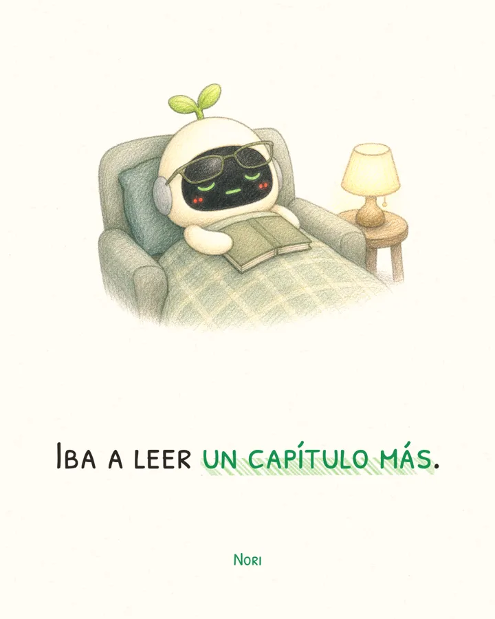

Ideas de libros, contadas fácil.
Nori lee libros de hábitos y productividad y cada semana cuenta una idea: qué dice el autor, por qué funciona y cómo probarla mañana. Sin prometer milagros.

Carruseles
Una idea, paso a paso, para leer en un minuto.




Infografías
La idea en un dibujo, para guardar.


Historietas de Nori
Los sábados, Nori en mitad de uno de sus hábitos. Sin moraleja.



Y para llevarlas a tu día, Norday Habits.
Gratis, sin anuncios y sin compras. Para Android.